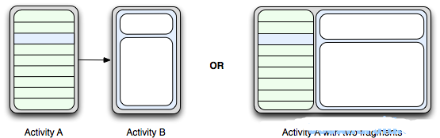
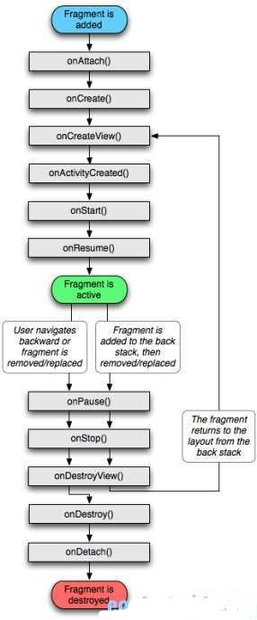

Fragments (Android官方文档中文版)
概述
Fragment表现Activity中用UI的一个行为或者一部分。可以组合多个fragment放在一个单独的activity中来创建一个多界面区域的UI，并可以在多个activity里重用某一个fragment。把fragment想象成一个activity的模块化区域，有它自己的生命周期，接收属于它的输入事件，并且可以在activity运行期间添加和删除。
Fragment必须总是被嵌入到一个activity中，它们的生命周期直接被其所属的宿主activity的生命周期影响。例如，当activity被暂停,那么在其中的所有fragment也被暂停;当activity被销毁,所有隶属于它的fragment也被销毁。然而，当一个activity正在运行时(处于resumed状态)，我们可以独立地操作每一个fragment，比如添加或删除它们。当处理这样一个fragment事务时，也可以将它添加到activity所管理的back stack -- 每一个activity中的backstack实体都是一个发生过的fragment事务的记录。back stack允许用户通过按下BACK按键从一个fragment事务后退(往后导航)。
将一个fragment作为activity布局的一部分添加进来时，它处在activity的viewhierarchy中的ViewGroup中，并且定义有它自己的view布局。通过在activity的布局文件中声明fragment来插入一个fragment到你的activity布局中，或者可以写代码将它添加到一个已存在的ViewGroup。然而，fragment并不一定必须是activity布局的一部分;也可以将一个fragment作为activity的隐藏的后台工作者。
本文档描述了如何使用fragment创建你的应用程序, 包括:当被添加到activity的back stack后，fragment如何维护他们的状态。在activity中，与activity和其他fragment共享事件。构建到activity的actionbar.以及更多内容。
设计哲学
Android在3.0中引入了fragments的概念,主要目的是用在大屏幕设备上--例如平板电脑上，支持更加动态和灵活的UI设计。平板电脑的屏幕要比手机的大得多，有更多的空间来放更多的UI组件，并且这些组件之间会产生更多的交互.Fragment允许这样的一种设计，而不需要你亲自来管理viewhierarchy的复杂变化。通过将activity的布局分散到fragment中，你可以在运行时修改activity的外观，并在由activity管理的back stack中保存那些变化。
例如，一个新闻应用可以在屏幕左侧使用一个fragment来展示一个文章的列表，然后在屏幕右侧使用另一个fragment来展示一篇文章 – 2个fragment并排显示在相同的一个activity中，并且每一个fragment拥有它自己的一套生命周期回调方法，并且处理它们自己的用户输入事件。因此，取代使用一个activity来选择一篇文章，而另一个activity来阅读文章的方式，用户可以在相同的activity中选择一篇文章并且阅读，如图所示:

fragment在你的应用中应当是一个模块化和可重用的组件.即,因为fragment定义了它自己的布局,以及通过使用它自己的生命周期回调方法定义了它自己的行为,你可以将fragment包含到多个activity中.这点特别重要,因为这允许你将你的用户体验适配到不同的屏幕尺寸.举个例子,你可能会仅当在屏幕尺寸足够大时,在一个activity中包含多个fragment,并且,当不属于这种情况时,会启动另一个单独的,使用不同fragment的activity.
继续之前那个新闻的例子 -- 当运行在一个特别大的屏幕时(例如平板电脑),app可以在Activity A中嵌入2个fragment.然而,在一个正常尺寸的屏幕(例如手机)上,没有足够的空间同时供2个fragment用, 因此, Activity A会仅包含文章列表的fragment, 而当用户选择一篇文章时, 它会启动Activity B,它包含阅读文章的fragment.因此,应用可以同时支持图1中的2种设计模式.
创建Fragment

要创建一个fragment, 必须创建一个 Fragment 的子类 (或者继承自一个已存在的它的子类). Fragment类的代码看起来很像 Activity .它包含了和activity类似的回调方法, 例如 onCreate(), onStart(),onPause, 以及 onStop(). 事实上, 如果你准备将一个现成的Android应用转换到使用fragment,你可能只需简单的将代码从你的activity的回调函数分别移动到你的fragment的回调方法.
通常, 应当至少实现如下的生命周期方法:
onCreate()当创建fragment时, 系统调用此方法.
在实现代码中,应当初始化想要在fragment中保持的必要组件, 当fragment被暂停或者停止后可以恢复.
onCreateView()
fragment第一次绘制它的用户界面的时候, 系统会调用此方法. 为了绘制fragment的UI,此方法必须返回一个View, 这个view是你的fragment布局的根view. 如果fragment不提供UI, 可以返回null.
onPause()
用户将要离开fragment时,系统调用这个方法作为第一个指示(然而它不总是意味着fragment将被销毁.) 在当前用户会话结束之前,通常应当在这里提交任何应该持久化的变化(因为用户有可能不会返回).
大多数应用应当为每一个fragment实现至少这3个方法,但是还有一些其他回调方法你也应当用来去处理fragment生命周期的各种阶段.全部的生命周期回调方法将会在后面章节 Handlingthe Fragment Lifecycle 中讨论.
除了继承基类 Fragment , 还有一些子类你可能会继承:
DialogFragment显示一个浮动的对话框.
用这个类来创建一个对话框,是使用在Activity类的对话框工具方法之外的一个好的选择,因为你可以将一个fragment对话框合并到activity管理的fragment back stack中,允许用户返回到一个之前曾被摒弃的fragment.
ListFragment显示一个由一个adapter(例如 SimpleCursorAdapter)管理的项目的列表, 类似于ListActivity.
它提供一些方法来管理一个list view, 例如 onListItemClick()回调来处理点击事件.
PreferenceFragment
显示一个 Preference对象的层次结构的列表, 类似于PreferenceActivity.
这在为你的应用创建一个"设置"activity时有用处.
添加一个用户界面
fragment通常用来作为一个activity的用户界面的一部分,并将它的layout提供给activity.为了给一个fragment提供一个layout,你必须实现 onCreateView()回调方法, 当到了fragment绘制它自己的layout的时候,Android系统调用它.你的此方法的实现代码必须返回一个你的fragment的layout的根view.
注意: 如果你的fragment是ListFragment的子类,它的默认实现是返回从onCreateView()返回一个ListView,所以一般情况下不必实现它.
从onCreateView()返回的View, 也可以从一个xmllayout资源文件中读取并生成. 为了帮助你这么做, onCreateView() 提供了一个LayoutInflater对象.
举个例子, 这里有一个Fragment的子类, 从文件 example_fragment.xml 加载了一个layout:
public static class ExampleFragment extends Fragment { @Override
public View onCreateView(LayoutInflater inflater, ViewGroup container, Bundle savedInstanceState) {
// Inflate the layout for this fragment
return inflater.inflate(R.layout.example_fragment, container, false);
}
}
传入 onCreateView() 的 container 参数是你的fragmentlayout将被插入的父ViewGroup(来自activity的layout).savedInstanceState 参数是一个Bundle, 如果fragment是被恢复的,它提供关于fragment的之前的实例的数据,inflate() 方法有3个参数:
想要加载的layout的resource ID.
加载的layout的父ViewGroup.
传入container是很重要的, 目的是为了让系统接受所要加载的layout的根view的layout参数,
由它将挂靠的父view指定.
布尔值指示在加载期间, 展开的layout是否应当附着到ViewGroup (第二个参数).
(在这个例子中, 指定了false, 因为系统已经把展开的layout插入到container –传入true会在最后的layout中创建一个多余的view group.)
将fragment添加到activity
通常地, fragment为宿主activity提供UI的一部分, 被作为activity的整个viewhierarchy的一部分被嵌入. 有2种方法你可以添加一个fragment到activitylayout:
在activity的layout文件中声明fragment
你可以像为View一样, 为fragment指定layout属性.
例子是一个有2个fragment的activity:
<?xml version="1.0" encoding="utf-8"?><LinearLayout xmlns:android="http://schemas.android.com/apk/res/android"
android:orientation="horizontal"
android:layout_width="match_parent"
android:layout_height="match_parent">
<fragment android:name="com.example.news.ArticleListFragment"
android:id="@+id/list"
android:layout_weight="1"
android:layout_width="0dp"
android:layout_height="match_parent" />
<fragment android:name="com.example.news.ArticleReaderFragment"
android:id="@+id/viewer"
android:layout_weight="2"
android:layout_width="0dp"
android:layout_height="match_parent" />
</LinearLayout>
<fragment> 中的 android:name属性指定了在layout中实例化的Fragment类.
当系统创建这个activity layout时,它实例化每一个在layout中指定的fragment,并调用每一个上的onCreateView()方法,来获取每一个fragment的layout.系统将从fragment返回的 View直接插入到<fragment>元素所在的地方.
注意: 每一个fragment都需要一个唯一的标识,如果activity重启,系统可以用来恢复fragment(并且你也可以用来捕获fragment来处理事务,例如移除它.)
有3种方法来为一个fragment提供一个标识:
为android:id 属性提供一个唯一ID.
为android:tag 属性提供一个唯一字符串.
如果以上2个你都没有提供, 系统使用容器view的ID.
撰写代码将fragment添加到一个已存在的ViewGroup.
当activity运行的任何时候,都可以将fragment添加到activitylayout.只需简单的指定一个需要放置fragment的ViewGroup.为了在你的activity中操作fragment事务(例如添加,移除,或代替一个fragment),必须使用来自FragmentTransaction 的API.
可以按如下方法,从你的Activity取得一个 FragmentTransaction 的实例:
FragmentManager fragmentManager = getFragmentManager();FragmentTransaction fragmentTransaction = fragmentManager.beginTransaction();
然后你可以使用 add() 方法添加一个fragment, 指定要添加的fragment, 和要插入的view.
ExampleFragment fragment = new ExampleFragment();
fragmentTransaction.add(R.id.fragment_container, fragment);
fragmentTransaction.commit();
add()的第一个参数是fragment要放入的ViewGroup, 由resource ID指定,第二个参数是需要添加的fragment.一旦用FragmentTransaction做了改变,为了使改变生效,必须调用commit().
添加一个无UI的fragment
之前的例子展示了对UI的支持, 如何将一个fragment添加到activity. 然而,也可以使用fragment来为activity提供后台行为而不用展现额外的UI.
要添加一个无UI的fragment,需要从activity使用add(Fragment,String)来添加fragment(为fragment提供一个唯一的字符串"tag",而不是一个view ID).这么做添加了fragment,但因为它没有关联到一个activity layout中的一个view,所以不会接收到onCreateView()调用.因此不必实现此方法.
为fragment提供一个字符串tag并不是专门针对无UI的fragment的–也可以提供字符串tag给有UI的fragment–但是如果fragment没有UI,那么这个tag是仅有的标识它的途径.如果随后你想从activity获取这个fragment, 需要使用 findFragmentByTag().
管理Fragment
要在activity中管理fragment,需要使用FragmentManager. 通过调用activity的getFragmentManager()取得它的实例.
可以通过FragmentManager做一些事情, 包括:
使用findFragmentById()(用于在activitylayout中提供一个UI的fragment)或findFragmentByTag()(适用于有或没有UI的fragment)获取activity中存在的fragment
将fragment从后台堆栈中弹出, 使用 popBackStack() (模拟用户按下BACK 命令).
使用addOnBackStackChangeListener()注册一个监听后台堆栈变化的listener.
处理Fragment事务
关于在activity中使用fragment的很强的一个特性是:根据用户的交互情况,对fragment进行添加,移除,替换,以及执行其他动作.提交给activity的每一套变化被称为一个事务,可以使用在 FragmentTransaction 中的 API 处理.我们也可以保存每一个事务到一个activity管理的backstack,允许用户经由fragment的变化往回导航(类似于通过activity往后导航).
从 FragmentManager 获得一个FragmentTransaction的实例:
FragmentManager fragmentManager = getFragmentManager();FragmentTransaction fragmentTransaction = fragmentManager.beginTransaction();
每一个事务都是同时要执行的一套变化.可以在一个给定的事务中设置你想执行的所有变化,使用诸如 add(), remove(),和 replace().然后, 要给activity应用事务, 必须调用 commit().
在调用commit()之前, 你可能想调用 addToBackStack(),将事务添加到一个fragment事务的backstack. 这个back stack由activity管理, 并允许用户通过按下 BACK按键返回到前一个fragment状态.
举个例子, 这里是如何将一个fragment替换为另一个, 并在后台堆栈中保留之前的状态:
// Create new fragment and transactionFragment newFragment = new ExampleFragment();
FragmentTransaction transaction = getFragmentManager().beginTransaction();
// Replace whatever is in the fragment_container view with this fragment,
// and add the transaction to the back stack
transaction.replace(R.id.fragment_container, newFragment);
transaction.addToBackStack(null);
// Commit the transaction
transaction.commit();
在这个例子中, newFragment替换了当前layout容器中的由R.id.fragment_container标识的fragment.通过调用addToBackStack(), replace事务被保存到back stack,因此用户可以回退事务,并通过按下BACK按键带回前一个fragment.
如果添加多个变化到事务(例如add()或remove())并调用addToBackStack(),然后在你调用commit()之前的所有应用的变化会被作为一个单个事务添加到后台堆栈, BACK按键会将它们一起回退.
添加变化到 FragmentTransaction的顺序不重要, 除以下例外:
必须最后调用 commit().
如果添加多个fragment到同一个容器, 那么添加的顺序决定了它们在view hierarchy中显示的顺序.
当执行一个移除fragment的事务时, 如果没有调用 addToBackStack(), 那么当事务提交后,那个fragment会被销毁,并且用户不能导航回到它. 有鉴于此, 当移除一个fragment时,如果调用了addToBackStack(), 那么fragment会被停止, 如果用户导航回来,它将会被恢复.
提示: 对于每一个fragment事务, 你可以应用一个事务动画,通过在提交事务之前调用setTransition()实现.
调用 commit() 并不立即执行事务.恰恰相反, 它将事务安排排期, 一旦准备好,就在activity的UI线程上运行(主线程).如果有必要, 无论如何, 你可以从你的UI线程调用executePendingTransactions()来立即执行由commit()提交的事务. 但这么做通常不必要,除非事务是其他线程中的job的一个从属.
警告:你只能在activity保存它的状态(当用户离开activity)之前使用commit()提交事务.
如果你试图在那个点之后提交,会抛出一个异常.这是因为如果activity需要被恢复,提交之后的状态可能会丢失.对于你觉得可以丢失提交的状况, 使用commitAllowingStateLoss().
与Activity通信
尽管Fragment被实现为一个独立于Activity的对象,并且可以在多个activity中使用,但一个给定的fragment实例是直接绑定到包含它的activity的. 特别的,fragment可以使用 getActivity() 访问Activity实例, 并且容易地执行比如在activitylayout中查找一个view的任务.
View listView = getActivity().findViewById(R.id.list);
同样地,activity可以通过从FragmentManager获得一个到Fragment的引用来调用fragment中的方法, 使用findFragmentById() 或 findFragmentByTag().
ExampleFragment fragment = (ExampleFragment) getFragmentManager().findFragmentById(R.id.example_fragment);